Art Portfolio
Click to enlarge, more info on each below...
| 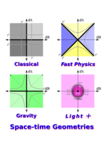 | 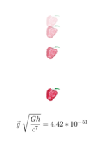 | |||
| 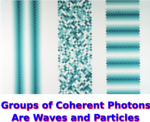 | 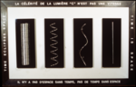 | 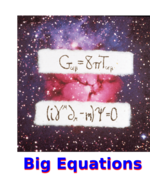 | 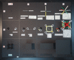 | 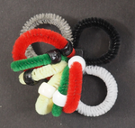 |
| 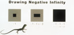 | 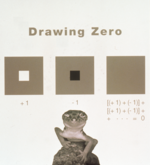 | 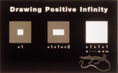 |
{kind=link}
{kind=link}
{kind=link}
{kind=link}
{kind=link}
{kind=link}
{kind=link}
{kind=link}
{kind=link}
{kind=link}
{kind=link}
{kind=link}
{kind=link}
Einstein
"Gray Albert"
36" x 36", oil on linen, 1995
buy as a t-shirt & stuff, hi res
{kind=link}
This is an oil painting done in 1995:
The most famous equation in physics was written this way by Einstein in 1905. The amount of energy one measures depends on a relative velocity in precisely this way.
"Turquoise Einstein"
36" x 36", oil on linen, 1995
buy as a t-shirt & stuff, hi res
{kind=link}
This is an oil painting done in 1995: 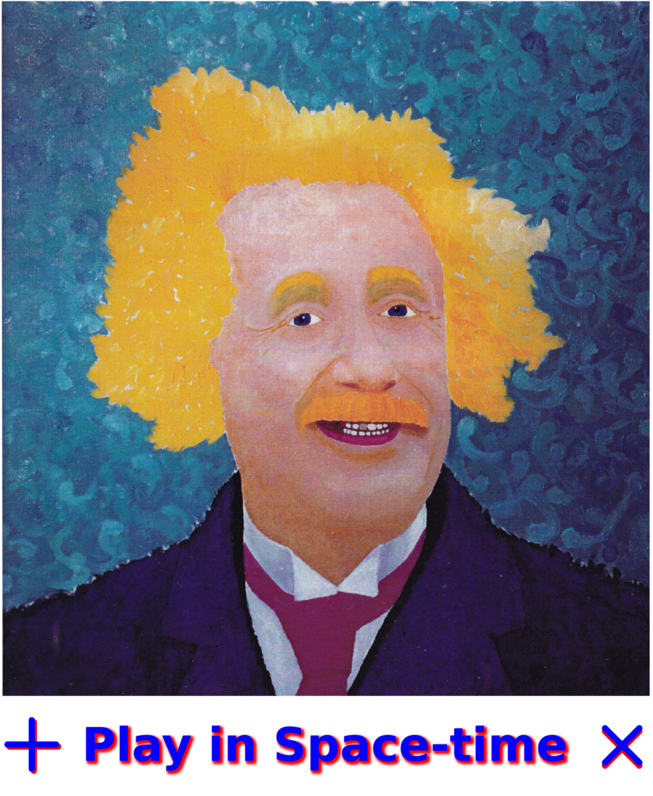
Einstein's math teacher Minkowski said:
The views of space and time which I wish to lay before you have sprung from the
soil of experimental physics, and therein lies their strength. They are
radical. Henceforth space by itself, and time by itself, are doomed to fade
away into mere shadows, and only a kind of union of the two will preserve an
independent reality.
I am trying to realize Minkowski's mission by using a type of number where only the union of space and time can be used.
Gravity
"Play in Space-time"
Marker drawing on paper, 8.5"x11", 2015
Elle and Doug Sweetser
buy as a t-shirt & stuff, hi res
{kind=link}
This graphic was developed in collaboration with my daughter to explain a new purely geometric approach to gravity. 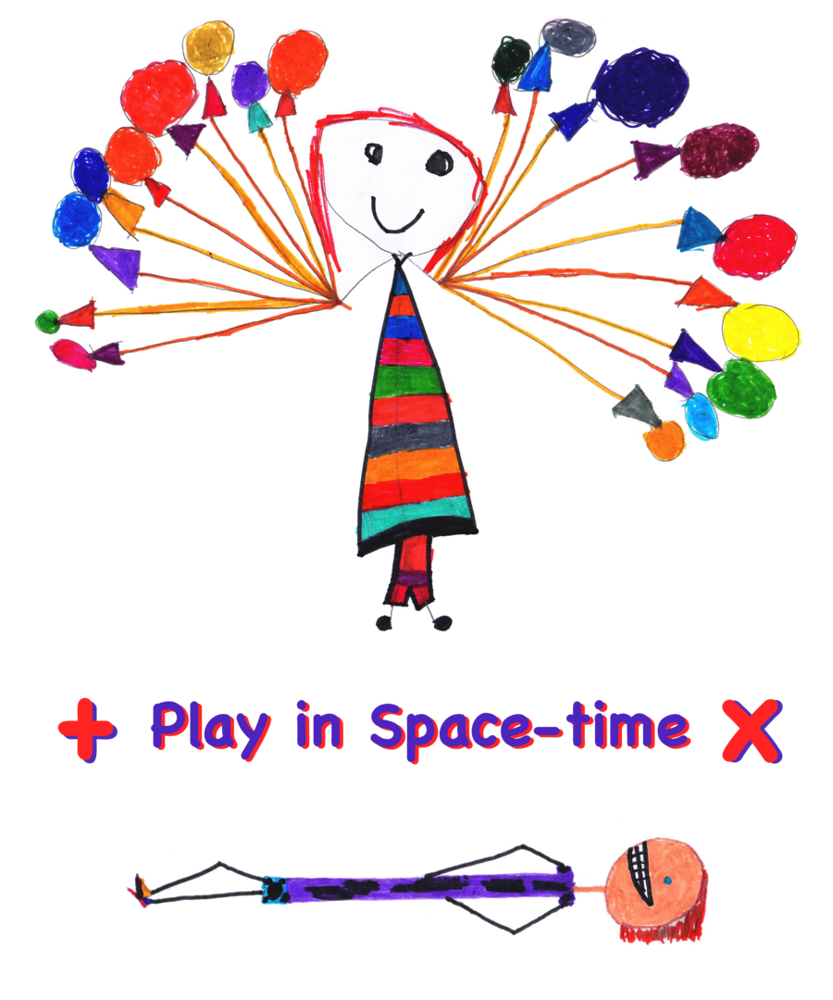
Balloon girl and prone boy agree on the value of space-times-time which results from squaring a quaternion.
"Space-time Geometries"
Computer graphic, 2016
buy as a t-shirt & stuff, hi res
{kind=link}
Nature knows how to do many forms of physics simultaneously. Thus we need to
think of multiple forms of geometry together as is done on this t-shirt.

Newtonian physics has absolute time paired with absolute space (in gray). Einstein added the limitation that massless light is the only thing where time is space, the 45 degree angle. My new proposal for gravity takes the Newtonian absolutes and makes sure nothing crosses the lines. If space-time is a number and not a vector field, then one can see the symmetries that underlies both electromagnetism and the weak force.
"Small Apple"
Pastel on paper + computer, 3"x6", 2005
buy as a t-shirt & stuff, hi res
{kind=link}
Simple, silent, and dimensionless

Gravity written wihout units
tiny beyond the tiniest tiny
gives weight to mountains and butterflies
even light bends to this King.
Lives lived without words
alive, breathing, being in now
give weight to
responsibilities and laughter
even love bows to life.
From a Christmas card written after my daughter was born.
Quantum
"Groups of Coherent Photons Behave Like Waves and Particles"
36"x24", Computer graphic, 1995
buy as a t-shirt & stuff, hi res
It's the source, not the slits.
{kind=link}
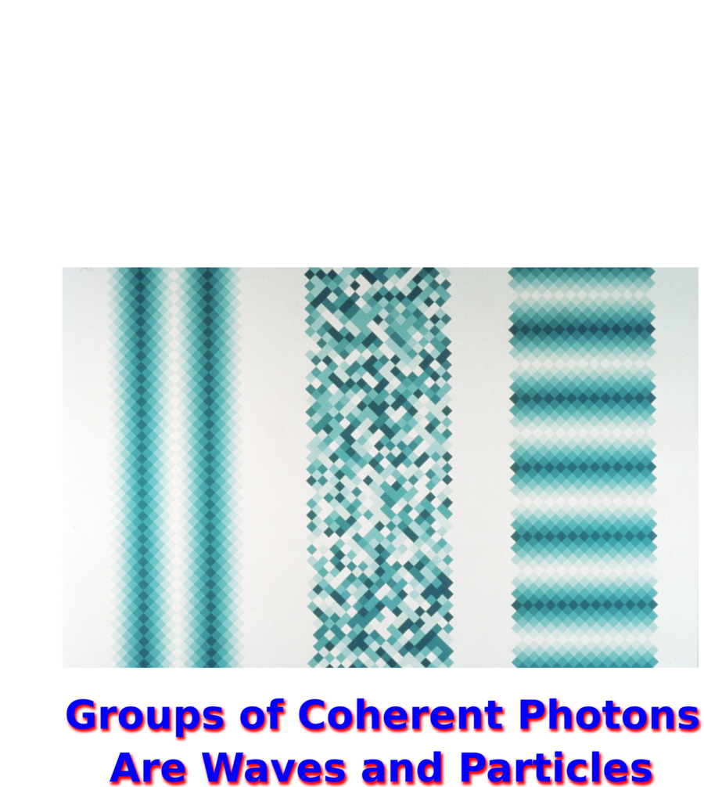
A source for light must be coherent to create an interference pattern. That requires organization. The middle column is incoherent and never has an interference pattern.
"The Speed of Light According to René Magritte"
Mixed media, 60"x36", 1995
buy t-shirts & stuff, hi res
{kind=link}
The speed of light is about the relationship between time and space, not how fast something is going.
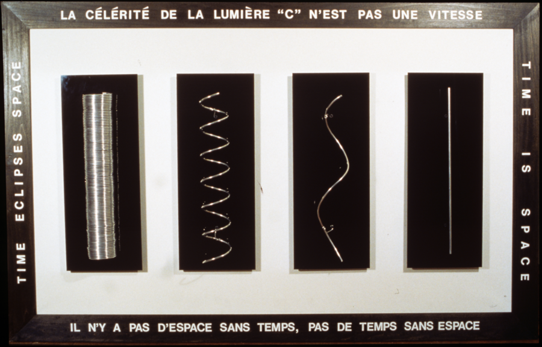
If you can sit around and tell the long story of your life to me, then time eclipses space. The greater the difference in our speeds, the less of a story one can tell. Photons get one chance to tell one story and then they are gone.
"Big Equations"
Mixed media, 3x3", 1995
The field equations of general relativity and the Dirac equation. 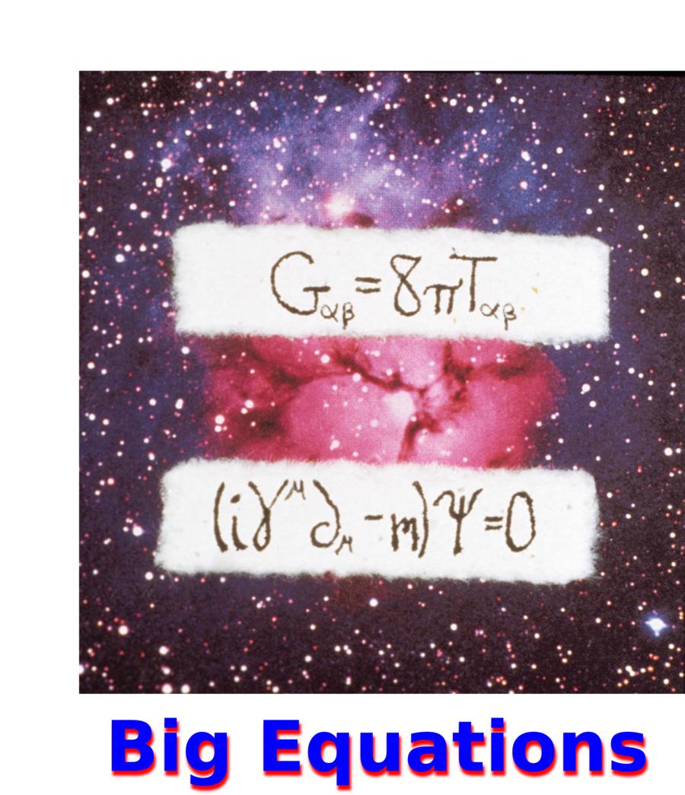
The field equations of general relativity cover the big stuff of the Universe. The small stuff is accounted for by the Dirac equation.
Number Theory
"Numbers in Theory"
Mixed media, 42"x32", 2014
Zero, one, real, complex, and quaternion numbers, all in one animation.

So simple in the upper left, so beyond big by the lower right.
Zero Spider
Mixed media, detail
The graph theory for multiplying by zero in 4D looks like a spider.
White means one, gray is minus one, black is zero. The three colored cleaners are i, j, and k, each being positive or negative depending on if it has white or black bead respectively.
"Drawing Negative Infinity"
Computer graphic, 16"x10", 1995 hi res
{kind=link}
"Drawing Zero"
Computer graphic, 12"x12", 1995 hi res 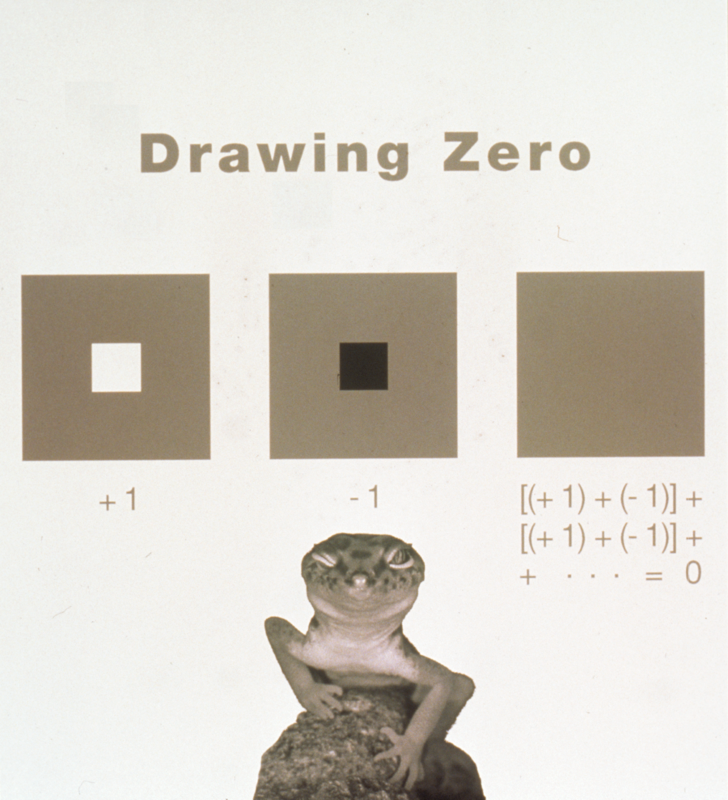
{kind=link}
"Drawing Positive Infinity"
Computer graphic, 16"x10", 1995 hi res
{kind=link}
Videos
A 6 minute tour
A walk through my townhouse.
Einstein!
Thoughts on the great thinker.
Light, Art, and Physics
A talk about 2 of the works, "The Speed of Light According to René Magritte" and "Groups of Coherent Photons Behave Like Waves and Particles."